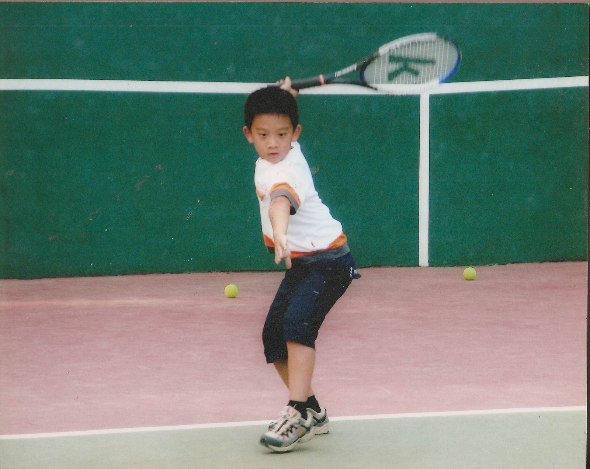
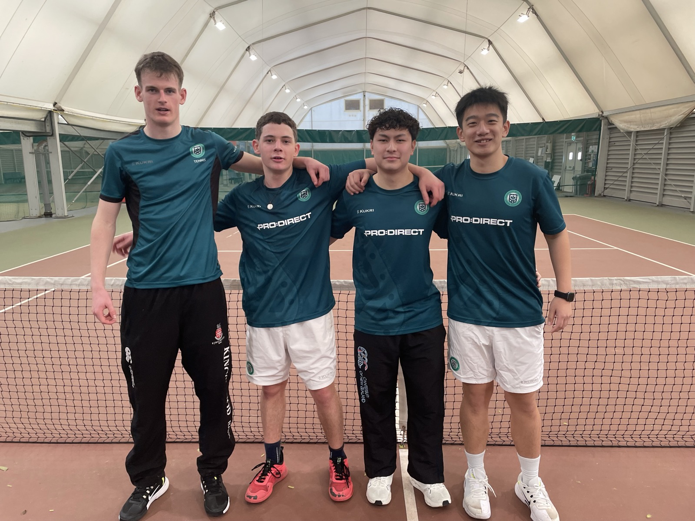
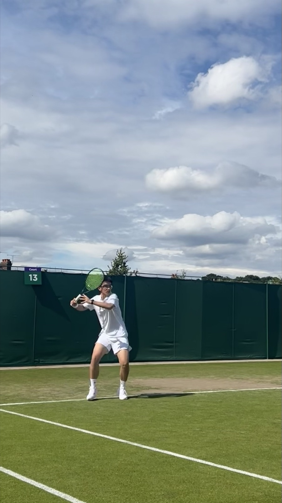
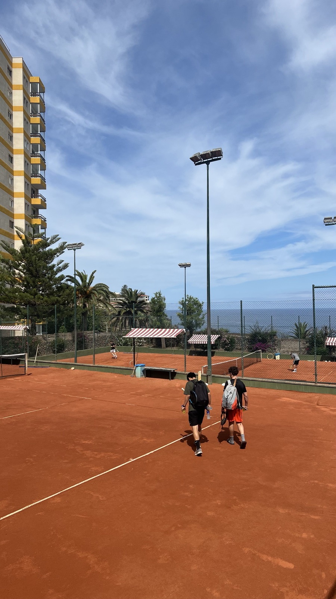
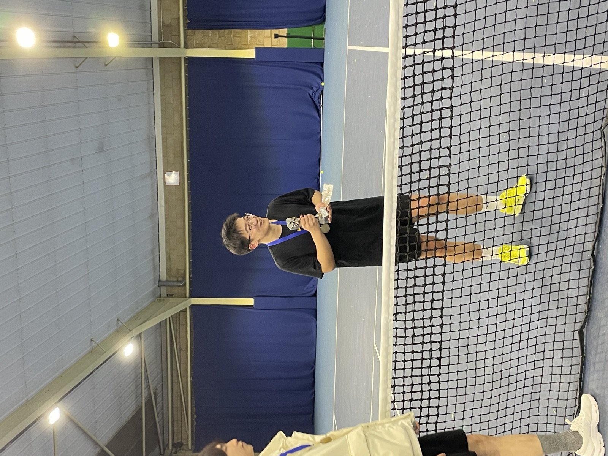
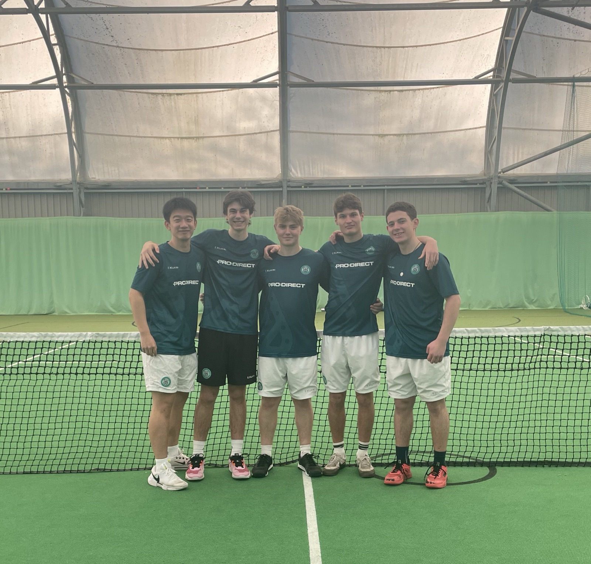
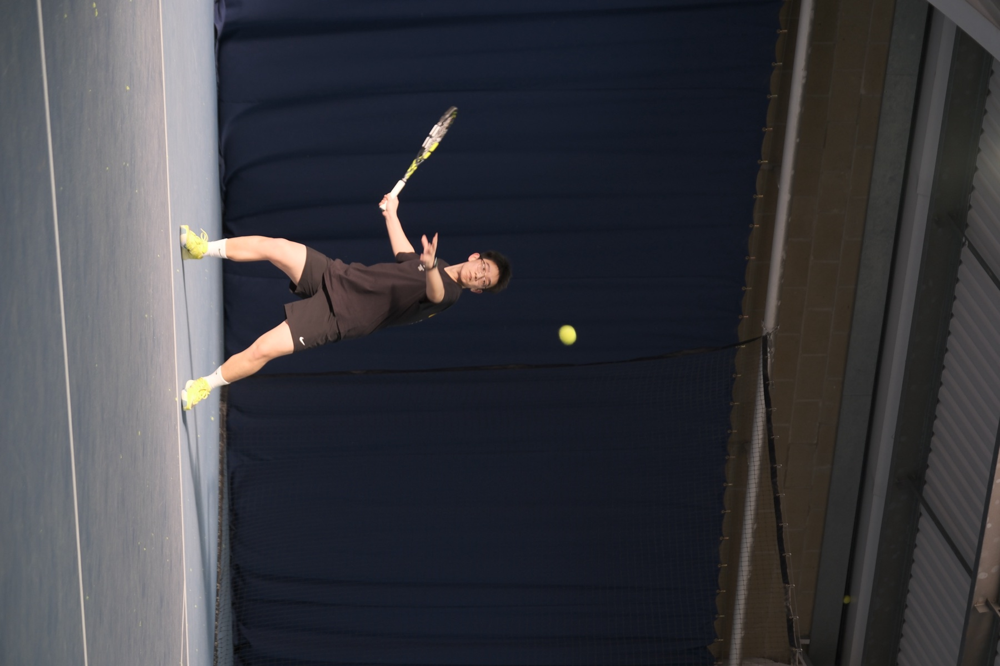

BEYOND RESEARCH
Tennis
Outside research, I am a tennis player. I started learning tennis at the age of four and have represented the University of Exeter in BUCS competitions. I hold China's National Level 2 Athlete (国家二级运动员) designation in tennis.







1 / 7